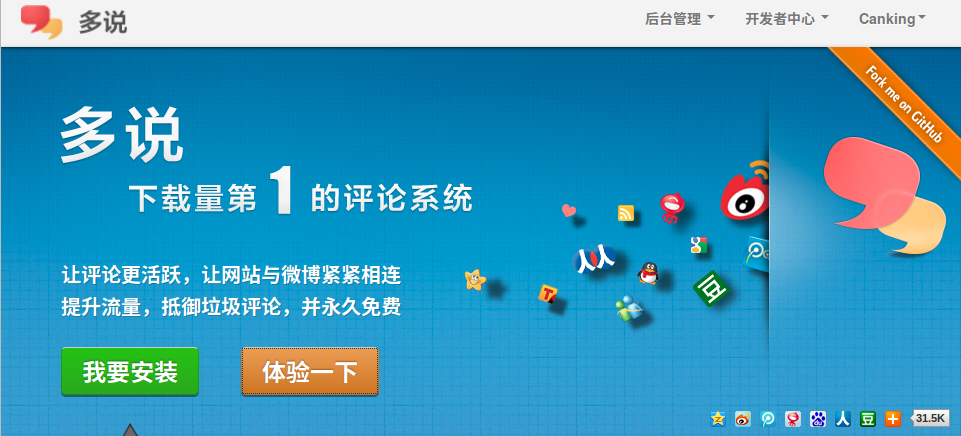
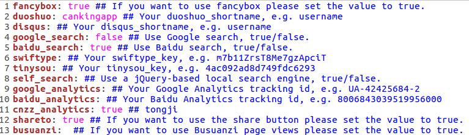
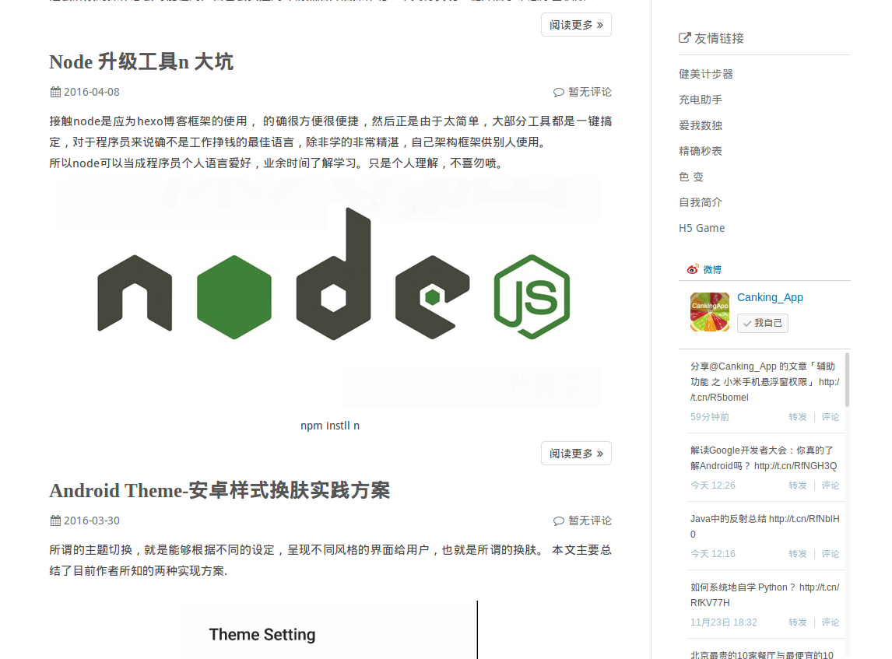
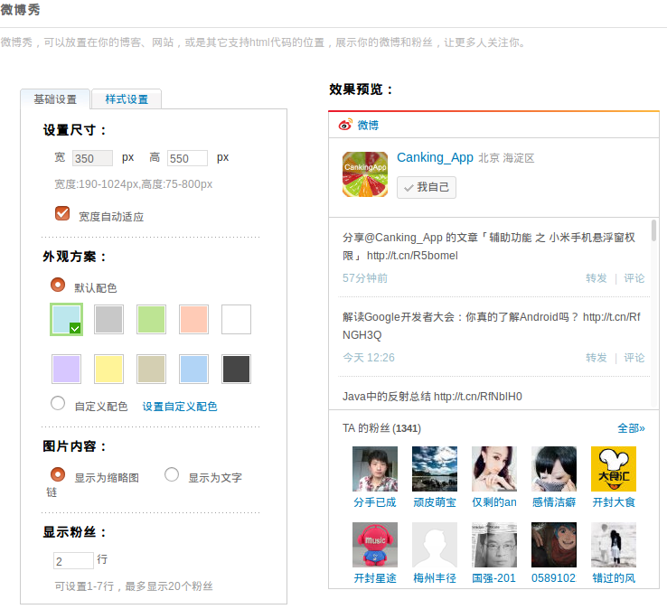
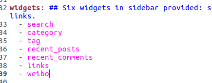

初识hexo就给人以眼前一亮的感觉, 查看资料到自己搭建个人博客, 简直是给人”带你装B,带你F”的快感,简单的博客生成操作, 多样化美观的主题选择, 功能强大的插件定制,关键是这些都是免费开源的,作为一个程序员,没有什么比遇到这种好使的软件更加给人已激动了.


配置环境
安装Node（必须）作用：用来生成静态页面的, win\mac\linux都有相关版本自行到官网下载。
安装Git（必须）作用：作为一个21时间程序员,这个肯定大家都会用, 测试过程发现最好配置ssh, 体验会更好。
开发及配置
1. 安装hexo
$ npm install -g hexo
新版本需要安装git插件 $ npm install hexo-deployer-git --save
2. 初始化项目
新建一个你放hexo的新项目目录, cd到里面执行:
$ hexo init
$ npm install #安装相关依赖
3. Demo生成及预览
$ hexo generate #生成静态页面
$ hexo server #启动本地预览服务
然后用浏览器访问http://localhost:4000/，此时，你应该看到了一个漂亮的博客了
4. 主题选择及下载
hexo3.0使用的默认主题是landscape, 我们可以自行下载主题到theme目录下
$ npm install <plugin-name> --save
$ git clone <repository> themes/<theme-name>
安装失败情况可参考切换国内镜像源:
nmp国内镜像
无论是插件还是主题在安装后都需要在根目录下_config.yml中修改plugins和theme的值以启用他们。
1 2 3 4 5 6 7 8 9 10 11 12 13 14 15 16 17
| fancybox - 是否启用Fancybox图片灯箱效果 duoshuo - 多说评论 shortname disqus - Disqus评论 shortname google_search - 默认使用Google搜索引擎 baidu_search - 若想使用百度搜索，将其设定为true swiftype - Swiftype 站内搜索key tinysou - 微搜索 key self_search - 基于jQuery的本地搜索引擎，需要安装hexo-generator-search插件使用。 google_analytics - Google Analytics 跟踪ID baidu_analytics - 百度统计 跟踪ID shareto - 是否使用分享按鈕 busuanzi - 是否使用不蒜子页面访问计数 menu - 自定义页面及菜单，依照已有格式填写。填写后请在source目录下建立相应名称的文件夹，并包含index.md文件，以正确显示页面。导航菜单中集成了FontAwesome图标字体，可以在这里选择新的图标，并按照相关说明使用。 widgets - 选择和排列希望使用的侧边栏小工具。 links - 友情链接，请依照格式填写。 Static files - 静态文件存储路径，方便设置CDN缓存。 Theme version - 主题版本，便于静态文件更新后刷新CDN缓存。
|
5. 发布到github上
配置根目录 _config.yml
1 2 3
| deploy:type: git repository: https: branch: master
|
相关属性设置注释:
1 2 3 4 5 6 7 8 9 10 11 12 13 14 15 16 17 18 19 20 21 22 23 24 25 26 27 28 29 30 31 32 33 34 35 36 37 38 39 40 41 42 43 44 45 46 47 48 49 50 51 52 53 54 55 56 57 58 59 60 61 62 63 64 65 66 67 68 69 70 71 72 73 74 75 76 77 78 79 80
| title: 常兴E站 subtitle: Goals determine what you are going to be description: Goals determine what you are going to be author: changxing language: zh-CN timezone: url: http://yoursite.com root: / permalink: :year/:month/:day/:title/ permalink_defaults: source_dir: source public_dir: public tag_dir: tags archive_dir: archives category_dir: categories code_dir: downloads/code i18n_dir: :lang skip_render: new_post_name: :title.md default_layout: post titlecase: false external_link: true filename_case: 0 render_drafts: false post_asset_folder: false relative_link: false future: true highlight: enable: true line_number: true tab_replace: default_category: uncategorized category_map: tag_map: date_format: YYYY-MM-DD time_format: HH:mm:ss per_page: 10 pagination_dir: page plugins: - hexo-generator-feed theme: light feed: type: atom path: atom.xml limit: 20 deploy: type: git repository: https://your.git branch: master
|
执行命令上传到云端github上
hexo deploy
介绍几个hexo常用的命令,#后面为注释。
1 2 3 4
| $ hexo g $ hexo s $ hexo d $ hexo n
|
发表一篇文章
1. 新建
1
| $ hexo new "my new post"
|
2. 编辑 my-new-post.md
1 2 3 4
| title: my new post #可以改成中文的，如“新文章” date: 2015-04-08 22:56:29 #发表日期，一般不改动 categories: blog #文章文类 tags: [博客，文章] #文章标签，多于一项时用这种格式，只有一项时使用tags: blog
|
这里是正文，用markdown写，你可以选择写一段显示在首页的简介后，加上，在之前的内容会显示在首页，之后的内容会被隐藏，当游客点击Read more才能看到。
3.$ hexo g 生成静态文件
4.$ hexo d 同步到github
插件扩展（补充）
添加评论功能
hexo 默认是支持Disqus的，但是由于国内网站屏蔽不太适合，so,这里推荐强大的 多说评论。
注册多说 如图点击 我要安装， 然后按照要求填写，提交后即可活取嵌入代码。

hexo众多的theme中有些默认也是支持hexo的，比如我正在用的maupassant，只要设置theme根目录下的_config.yml文件即可，例如如图所示填入多说申请的二级域名（user_shortname）.

如果你的theme中没有默认设置duoshuo,那么也要在config.yml中添加：duoshuo_shortname: yourname,并且修改theme/name/layout/partial/article.ejs, 没有article的要修改comments文件。在comments层替换从多说得到的代码。
其中参数填写如下：
1
| data-thread-key=page.path, data-title=page.title, data-url=page.permalink, data-author-key='1'
|
添加微博秀
样式如下：
在微博开发平台生气微博秀相关代码，设置相关测试后复制，如图

然后添加到hexo 博客theme中。在_widget目录下添加weibo.jade,拷贝得到的代码保存到里面。然后在根目录下_config.yml中添加控件，如下图：

保存后，重新编译部署即可看到效果。
后续
个人博客地址
新浪微博
欢迎沟通学习